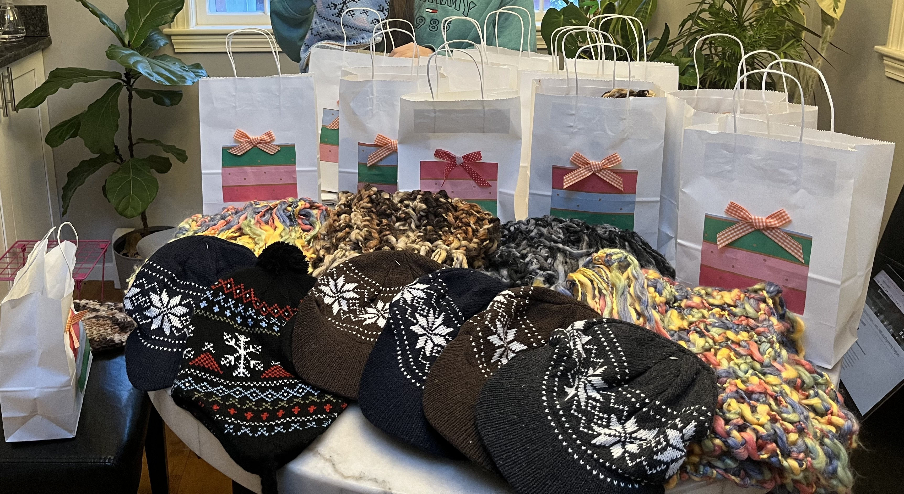

About the Club
The Andover Harvard Homeless Mission Club is a student-led organization that coordinates volunteering and community
partnerships to support individuals experiencing homelessness and food insecurity.
We are a local branch of Harvard Homeless Mission Inc., which supports communities in Boston/Harvard Square.
- Recurring service opportunities
- Partner-led volunteering
- Student leadership and sustainable continuity
Founder & President

Yejin Choe
Founder & President
Founded the Andover branch of Harvard Homeless Mission Inc. to connect students with
consistent, hands-on community service. Led partnerships with local organizations,
coordinated volunteer logistics, and sustained student engagement across multiple
service initiatives.
- Established and led the Andover Harvard Homeless Mission
- Coordinated student volunteer efforts with Lazarus House Ministries
- Organized meal preparation, care packages, and encouragement card initiatives
- Supported food access efforts through community pantry collaboration
- Contributed to broader Harvard Homeless Mission programs in the Boston area